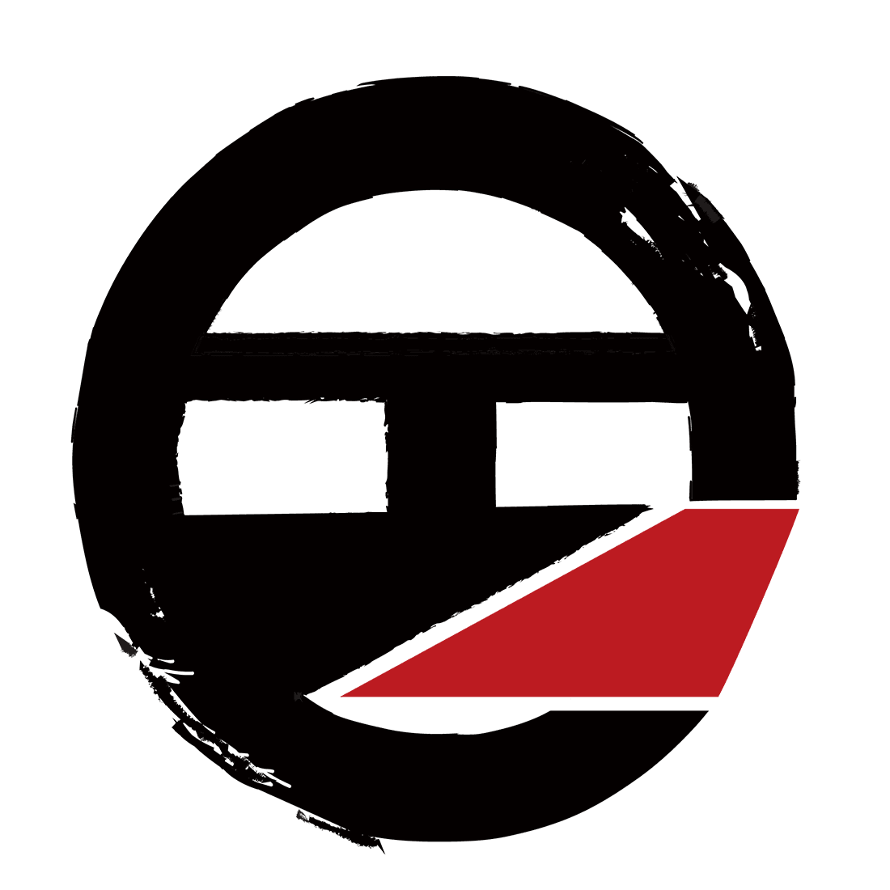
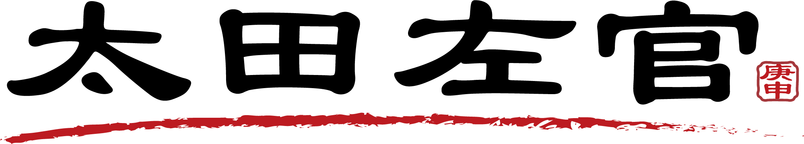
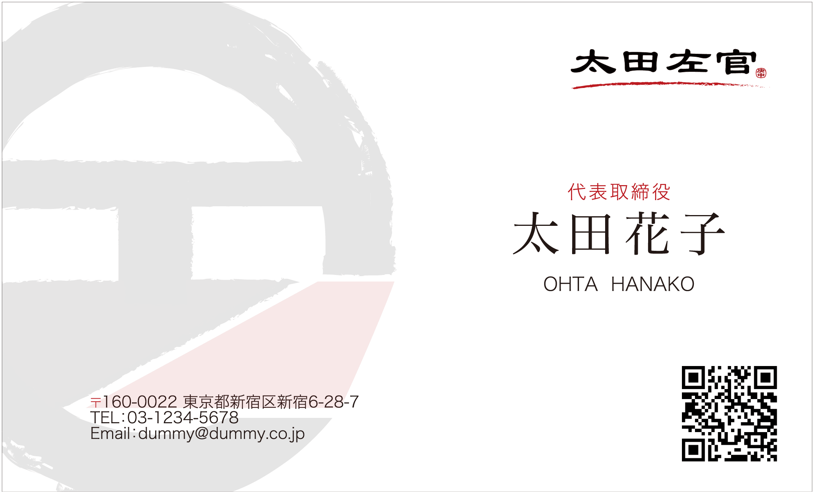
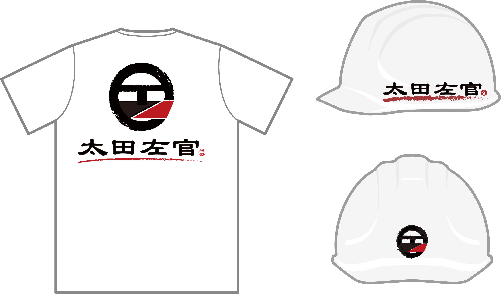

祖父が営んでいた「太田左官」をテーマに、左官職人の力強さと伝統への敬意を込めて制作したロゴデザインです。
ブランド名
太田左官
制作目的
- 左官職人としての誇りや信頼感を視覚的に伝える
- 伝統ある仕事の魅力を、現代にも伝わる形で表現する
- 印象に残るシンボルを通して会社の認知につなげる
ターゲット
施工を依頼する個人のお客様や地域の事業者を中心に、誠実さ・技術力・信頼感を重視して施工会社を選ぶ層を想定しました。
コンセプト
祖父が営んでいた「太田左官」をテーマに、職人の力強さと手仕事ならではの温かみが伝わるロゴを目指して制作しました。 左官の仕事にある誠実さや重厚感に加え、長く受け継がれてきた家業への敬意を込め、伝統と現代性の両方を感じられる表現を意識しています。
デザインについて
ロゴマークは「O」「田」「オ」をベースに幾何学的に構成し、 屋号とのつながりが自然に伝わるよう設計しました。 円形のモチーフを軸に全体のバランスを整えることで、 視認性と安定感のあるシンボルに仕上げています。
また、ロゴタイプは重厚感と可読性を意識し、 伝統的な印象を持ちながらも現代の媒体で使いやすいバランスに調整しました。
こだわったポイント
オリジナリティのある形に落とし込みました。 円形の筆跡は左官の手仕事の勢いや職人らしさを表現しています。
赤いラインには鏝（こて）跡を想起させる意味を持たせています。またポイントで、屋号である「庚申様」をロゴタイプには使用しています。 黒は職人の誇りと重厚感を表し、配色全体で力強さと伝統性を表現しました。
遠くから見ても印象に残る視認性と、 家業として受け継がれる背景が伝わる象徴性の両立を意識しています。
制作時間
デザイン 8h
制作日
2026年3月
ロゴタイプ

名刺

Tシャツ・ヘルメット
